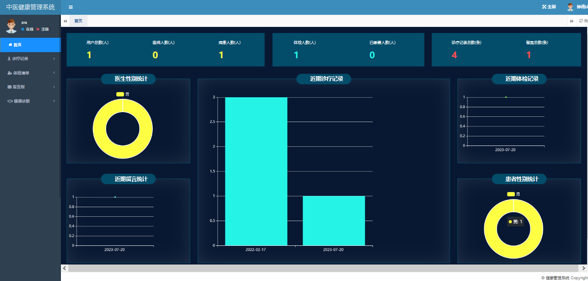
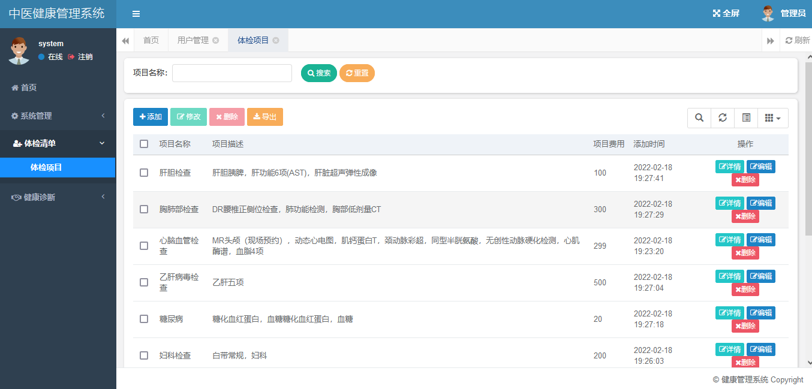
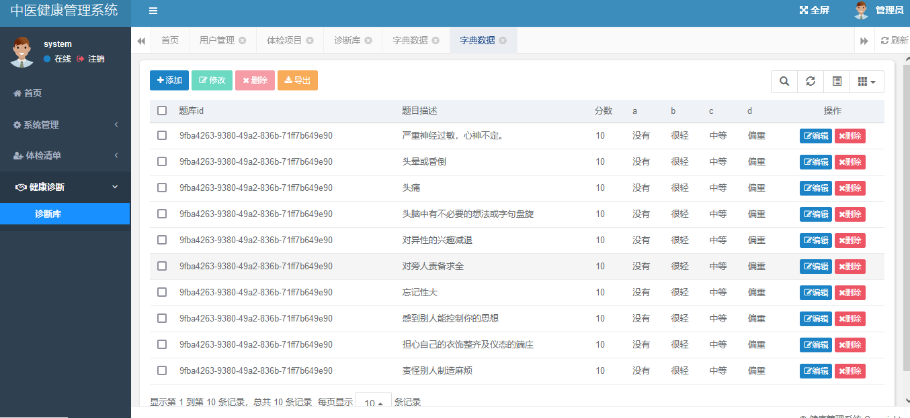
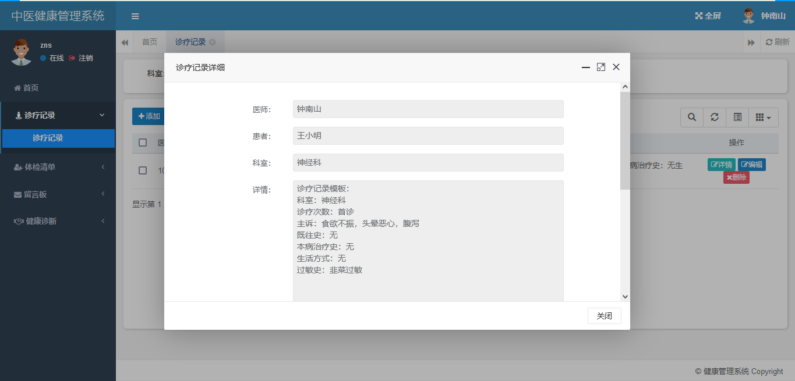
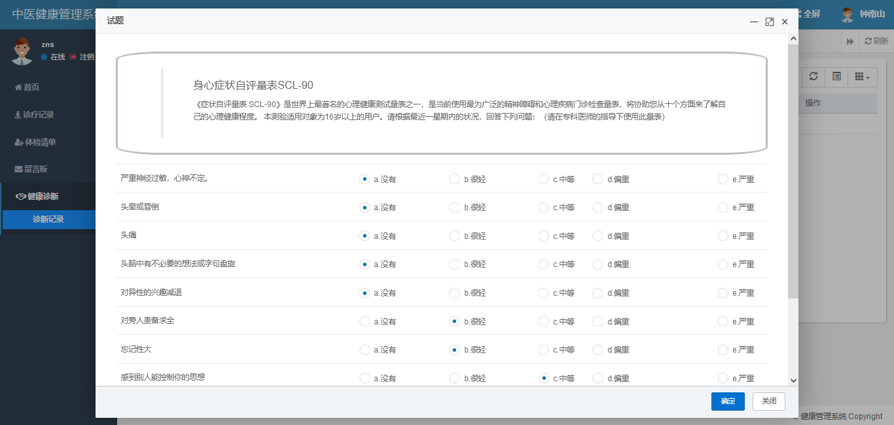
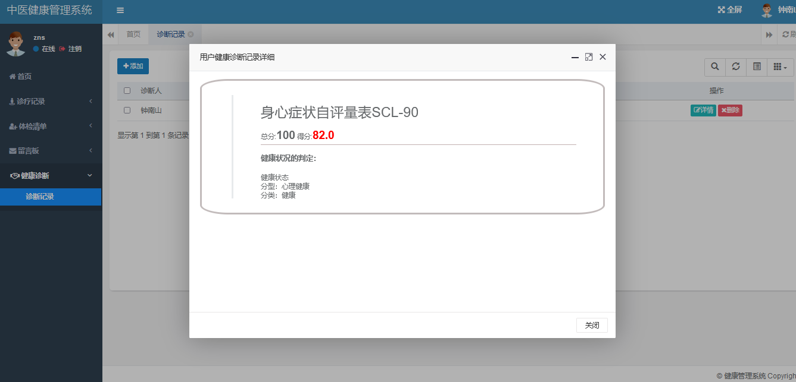
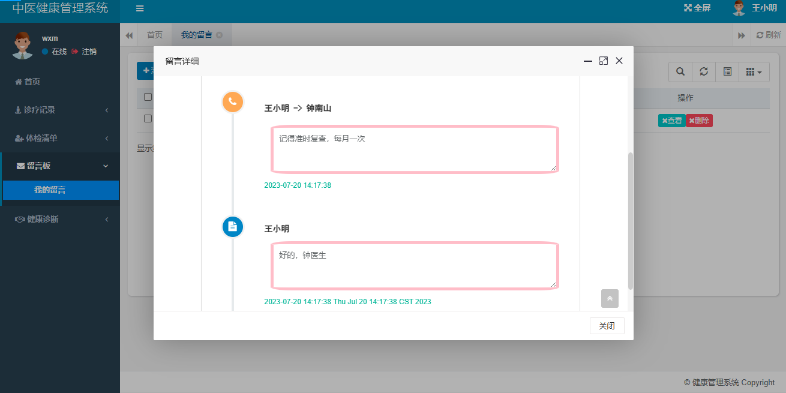

SpringBoot 健康管理系统
一、项目介绍
132
健康管理系统使用 SpringBoot+Mybatis 进行开发，系统提供三种角色，功能如下：
管理员：
-
用户管理
-
体检项目管理
-
健康诊断库管理
-
诊断题目管理
医生：
-
诊疗记录管理
-
体检项目查看
-
体检记录确认
-
留言
-
健康答题
患者：
-
诊疗记录查看
-
体检项目查看
-
体检记录添加
-
留言
-
健康答题
二、技术框架
-
后端：SpringBoot，Mybatis
-
前端：bootstrap，echarts
三、安装教程
-
用 idea 打开项目
-
在 idea 中配置 jdk 环境
-
配置 maven 环境并下载依赖
-
新建数据库，导入数据库文件
-
在 application.yml 文件中将数据库账号密码改成自己本地的
-
启动运行，浏览器输入
http://localhost:8080
进行访问。管理员账号密码 system/123456，医生账号密码 zns/123456，患者账号密码 wxm/123456
四、项目截图






